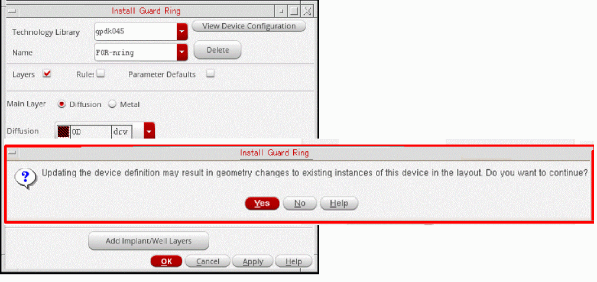

5
Version Management
Fluid guard rings are SKILL/SKILL++ Pcells, with powerful creation and graphical editing capabilities. The Pcell code to evaluate them is located in the Virtuoso installation hierarchy. When you move to a different version of Virtuoso, geometry changes in existing FGR instances might occur, more details are described below. This can lead to issues as qualified designs that are already in production can change in a different release of Virtuoso and such designs would require re-qualification.
Fluid guard rings are dynamically evaluated Pcells. The Pcell code to evaluate them, Virtuoso Fluid Object (VFO), is shipped with the Virtuoso release (vfo*.ils files) under the following directory)
<cic_install_dir>/tools/dfII/etc/vfo
By default, the VFO code available in the Virtuoso hierarchy of the running Virtuoso session is used for FGR Pcell evaluation. Geometry changes in existing FGR instances can occur due to introduction of new or enhanced FGR features, or bug fixes made in the VFO code, or changes made in non-VFO SKILL functions used by the FGRs.
To ensure that the layout does not display unexpected geometry changes in existing FGR instances when moving to newer Virtuoso releases, the FGR version management solution is now available. This solution is based on caching on disk the FGR sub-masters that exist in a layout cellview.
Version Management Solution
The cache-based version management solution ensures that layouts are safe from unexpected geometry changes in existing FGR instances when moving to newer versions of Virtuoso.
When you create or edit an FGR instance, the FGR sub-masters in the memory are saved to a cache when you save the layout cellview. The cache is located under the containing layout cellview. When you open the layout, Virtuoso uses these saved sub-masters from the cache, rather than dynamically evaluating them.
The following figure describes the flow of the version management solution:
This solution ensures that the layout is safe from unexpected geometry changes in existing FGR instances when moving to newer Virtuoso versions. When you save an FGR instance, the FGR sub-master gets saved to the FGR cache. The version of the VFO code, for example FGR_617.0, used during the creation or editing of an FGR instance is saved in the cache in the cacheCreateVersion parameter of the sub-master.
When you re-open the layout in subsequent sessions, the FGR sub-master used in that layout will be read from the cache instead of the SKILL code being evaluated. This ensures that the geometries of instances remains unchanged across Virtuoso versions.
The FGR instances remain Pcells, so you can use the editing commands on these instances.
Each layout cellview containing FGR instances has its own cache. This avoids conflicts that can arise if a common cache is used for multiple layout cellviews.
This FGR version management solution is compatible with mainstream IC design management tools.
To enable version management for FGRs, you can do one of the following:
-
Install a new FGR super-master in IC6.1.8 using the Install Guard Ring form
-
Re-install the existing FGR super-master in IC6.1.8
Re-installing an FGR device is the same as redefining a Pcell super-master. So, the geometries of existing FGR instances in the layout can change after re-installation of an FGR device. You get a warning message before continuing with the FGR re-installation, as shown in the figure below.
After re-installing in IC617 a legacy FGR super-master that was originally installed in a prior version of Virtuoso, for example IC615 or IC616, newly created instances of such FGRs in IC617 will be saved to the FGR cache. However, existing legacy instances of such super-masters will not get stored in the cache automatically. They will continue being SKILL-evaluated. To get such instances stored to the FGR cache, you can do one of the following:
- Select these instance(s) in your layout, and on the Edit Properties form, click the Update Version button.
- Use the vfoGREnableVersionCache SKILL function.
Cache Files
The version management solution uses two binary files:
-
Cache file,
cache.pcl:
Thecache.pclfile contains the images of the evaluated sub-master. -
Index file,
index.pcl:
Theindex.pclfile contains the data for efficient retrieval of these images and other information of super-masters, such as the timestamp and parameter list.
These cache files are located under the Unix or Linux directory of the containing layout cellview.
The cache files get updated when you save the layout cellview after creating or editing FGR instances. The edit commands, such as Merge, Chop, Tunnel, and Stretch, involve changes in the FGR Pcell parameter values, and the edits that you make through the Edit Properties form, cause the cache to be updated when you save the layout.
The cache files do not get updated when you move or copy an FGR instance. When you move an FGR instance and its sub-master exists in the cache, the cache is not updated on saving the cellview. This is because the parameters of the instance do not change during the Move command. When you copy an FGR instance and its sub-master exists in the cache, then when you save the cellview, the cache to not updated. This is because both instances point to the same sub-master, and that sub-master already exists in the cache.
The writing and reading from the cache happens as a background activity. If you want to view the read and write information about FGR sub-masters, you can set the following Shell environment variable before starting the Virtuoso session.
If the cache files are read-only at the time of creating or editing an FGR instance, the value of the cacheCreateVersion parameter is set to 0 on that instance. At the time of saving the celllview, you get a warning message about all such FGR instances whose sub-masters will not be saved in the cache.
GUI Updates for Version Management
A new field, Cache Create Version, has been added to the Edit Instance Properties form. This field is visible when you select a cache-enabled FGR instance. The value of this field corresponds to the VFO version that was used when that instance was created or edited, and its sub-master was saved to the FGR cache.
When you click the Disable Cache button, the value in the Cache Create Version field is set to 0, as shown in the figure below.
When the value of this field is set to 0, and you open this FGR instance in a new session, it is evaluated through SKILL instead of being read from the cache.
When you click the Update Version button, the selected FGR instance is re-evaluated, using the VFO version of the current Virtuoso session.
When you save the layout cellview containing the FGR instances, the sub-master of the FGR instances which are version enabled will get saved to the FGR cache, if it was not already present in the cache.
Cache Cleaning Mechanism
The version management solution has a cache cleaning mechanism to prevent increase in the cache file size. There are ways to automatically or manually clean the cache, as described below.
Automatic Cache Cleaning
The automatic cache cleaning mechanism prevents cache file size growth. When you delete all instances of an FGR sub-master from a layout cellview, the image of that sub-master is no longer needed.
Unused FGR sub-master images get deleted from the cache after you open the layout cellview in the scenarios mentioned below:
-
While remaining in the current Virtuoso session:
Purge the layout cellview from the Virtual Memory. In the CIW, select the File - Close Data - Close & Purge Data option. Then, re-open the layout cellview. -
After you close the current Virtuoso session:
Start a new Virtuoso session. Open the layout cellview for the first time in the new Virtuoso session.
Manual Cache Cleaning
You can clean the cache files either by using the GUI options or the SKILL function described below:
-
GUI options: You can clean the FGR cache of an open layout cellview by using either of the two options described below:
or -
SKILL function: You can use the vfoGRCleanVersionCache SKILL function to clean the
index.pclandcache.pclfiles and remove any unused entries of sub-masters from these files.
cache.pcl and index.pcl files continue to exist for the cellview, even if they do not contain any FGR sub-masters. However, the size of these files will be 0 bytes.Known Limitations of Version Management Solution
The version management solution has the following known limitations:
-
Consider a scenario where you create instances of FGR devices that support caching, such as in IC617 FCS or higher, and re-open the layout cellview in an older version of Virtuoso that does not support FGR caching, such as IC616 or older. In such a scenario, you will get Pcell evaluation errors for such FGR instances. Samples of some errors that you will see are shown below:
*WARNING* (DB-270001): Pcell evaluation for gpdk045/FGR_Cache1/layout has the following error(s):
*WARNING* (DB-270002): ("error" 1 t nil ("*Error* Unable to create a device named 'FGR_Cache1' because of (\"slotValue\" 0 t nil (\"*Error* slotValue: no such slot - cacheCreateVersion in class vfoGuardRing_ver_1. Valid slot names: (modelLpp vfoProtocolClass keepOuts hide_keepouts ... contAlignment removeCornerContacts)\")). Redefine the device and try again.\n"))
*WARNING* (DB-270003): Error kept in "errorDesc" property of the label "pcellEvalFailed" on layer/purpose "marker/error" in the submaster. -
If there is mismatch between the timestamp of the sub-master and super-master, you will see the following warning message when you open the cellview:
*WARNING* (VFO-113026): The cellview 'reflib/cacheTest/layout' contains instances of the superMaster 'reflib/cacheDev1/layout' that was modified after the creation of the version cache. The changed geometries of the instances in this cellview might not be saved in the version cache. Contact Cadence Customer Support for assistance to update the version cache.
Even after the timestamp mismatch, by default, the sub-master would be read from the cache to create the instance geometry. To ignore the saved sub-master and create an FGR instance by evaluating it in the current Virtuoso version, you can use the Shell environment variable, FGR_CACHE_TIMESTAMP_CHECK.
In this case, you will also see the following warning message:
*WARNING* (VFO-113028): The superMaster was modified after the creation of the version cache. The instance was evaluated with the latest VFO code, but the 'cacheCreateVersion' CDF parameter will not be updated. -
If the
cache.pclfile gets corrupted and Virtuoso version is not same as the sub-master version saved in thecache.pclfile, the pcell evaluation will fail. In this case, to evaluate pcells with the current Virtuoso version, you can use the Shell environment variable, FGR_REEVAL_ON_CORRUPT_CACHE. This variable evaluates pcells submasters only in memory. To rectify corruption in thecache.pclfile, use the SKILL funtion vfoGetInstWithMissingCache.
SKILL Functions
The SKILL functions listed below let you manually update the FGR cache of one or more layout cellviews.
- vfoGRCleanVersionCache
-
vfoGRDisableVersionCache -
vfoGREnableVersionCache -
vfoGRUpdateVersionCache
Return to top